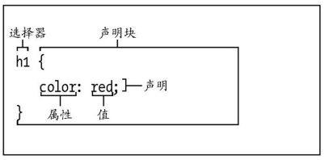

- CSS简介
样式表定义了网页的外观。样式表由规则组成，每个规则由选择器和声明块两部分组成。选择器决定哪些元素将受到影响。声明块里定义了样式的表现方式。

图1-1样式规则
样式表里的注释：
可以在样式表里，通过/*和*/为样式表添加注释。
继承：
可以将整个html文档理解为一棵树。当为一个元素使用CSS属性时，其所有后代元素也会继承这些属性。

图1-2html文档树
- CSS样式表的定义
样式表的引入方式
- 内联样式表
<pstyle=”color:red;”>测试文字</p>
此方式将表现（CSS）和内容（HTML）混在一起，严重违反了最佳实践，不推荐使用。
- 嵌入样式表
<style>
p{color:red；}
</style>
<p>测试文字</p>
此方式在html的head部分创建一个style标签，这个样式只能对所在网页起作用。
- 外部样式表
将样式规则写在以.css结尾的文件里，并在html文件里以link标签引入。
<linkrel="stylesheet"type="text/css"href="./css/style.css">
一个html页面可以包含多个link标签
层叠：
样式的来源由很多：例如，浏览器的默认样式；自己定义的样式（三种方式）；
当有多条规则定义某个元素的同一个属性时，会发生什么情况？
- 当个人编写的样式同浏览器的样式冲突时，以个人编写的样式为准。
- 考虑特殊性、顺序和重要性三个方面来决定哪个样式会起作用。
- 特殊性：指定选择器的具体程度，选择器越具体，规则就越强。当规则遇到冲突时，优先应用特殊性强的规则。

图1-3
特殊性最低的是元素本身；特殊性最高的是ID选择器
- 有时，特殊性不能判断应用哪个规则时，规则的顺序将起到作用：晚出现的规则优先级高于先出现的规则。
- 重要性。如果前两种规则还不够，则可以在某条样式声明的末尾加上！important。这条规则比所有的规则都高。（除非特殊情况，不建议使用）
属性的值：
inherent:显式的指出该属性与父元素有相同的值。
长度和百分数：
长度和单位之间没有空格：3px10em;0可以没有单位。
em：与对应元素的字号相等。
rem：相对于html元素字体的大小。
px：像素。
%：相对于父元素的大小。
CSS的颜色：
a）十六进制：#RRGGBB；
b）rbg，可以使用百分数或0-255之间的数字来指定这三种颜色的值。

c）英文单词：white，red、green等
d)rgba，在rgb的基础上增加了alpha（透明度），alpha越接近0，就越透明。
- 定义选择器
选择器：决定了选择哪些元素将被改变样式。
- 类型选择器
P{
//类型规则
}
- 类选择器，类选择器给一类元素添加规则。
.selector{
}
<pclass=”selector”></p>
- ID选择器，给某一个具体的元素添加规则。
#selector{
}
<pid=”selector”></p>
- 上下文选择器：根据元素的祖先、父元素或同胞元素来定位他们。

.architectp{}#
articlep{}
article.architectp{}
div【空格】p：会选择div元素所有的后代元素p
.architect>p：选择architect的直接后代；
.architect+p：选择.architect的相邻同胞元素p。同胞：有同一个父元素的元素。
.architect~p：选择所有的同胞元素p。
- 选择第一个、最后一个元素、第一个字母

li:first-child{}#选择第一个元素
li:last-child{}#选择最后一个元素
li:first-letter{}#选择元素的第一个字母（汉字）
- 按状态选择链接的元素
a:link{}#从未被激活的链接的外观；
a:visited{}#已被访问过的链接的改观；
a:focus{}#通过键盘选择，并已经准备好激活的链接。
a:hover{}#光标指向链接时的外观。
a:active{}#激活过的外观的链接。
注意：hover也可以用于其他元素。
- 按属性的值进行选择。
p[class]{}#选择有class属性的p元素

- 指定一组元素
h1,h2,h3{}#对h1,h2,h3三种元素起作用。
9、组合选择器:将上面所有的选择器进行组合。例如：.aah2[class=”second”]+p
- 为文本添加样式
- 字体
Body{font-family:Geneva;}
注意：
font-family是继承属性，对body设置了该属性后，样式会继承到其他子属性上。
Font-family的值如果有空格，需要用单引号或双引号引起来。多个字体，用空格隔开，当前一个字体不存在时，将会依次搜索字体。例如：font-family:"GillSans","GillSansMT",Calibri,sans-serif;
- 设置字体样式
font-style:italic;#斜体字
font-style:normal;#正常字体
font-weight:bold;#粗体，或者输入100-900之间的100的倍数，400是正常字体，700是粗体。Bolder（更粗）、lighter（更细）
font-weight:normal;#取消粗体格式。
Font-size:40px;#设置字体大小。可以使用em、rem和%。大多数系统里默认字体是16px;建议使用rem的值:

最好在body元素上建立一个基准，即声明body{font-size:100%;}
- 设置行高
Line-height:1.45rem;#px、%
- 设置字体的颜色
Color：red;
a:hover{color:red}
- 设置背景：
Background-color、background-image、background-repeat、background-attachment、background-position;


Background-image:url();
background-repeat:#repeat、repeat-x、repeat-y、no-repeat;
background-position:leftbottom;
background-attachment:fixed;#图像随页面滚动；scroll是默认值
background:#004url(../img/ufo.png)no-repeat170px20px;#简单写法
background-size:contain/cover/数值;#
contain:在显示图像完整高度和宽度的情况下，尽可能的扩大图像的尺寸。
Cover:填充整个背景区域。
background-size:50%50%;
- 间距控制
Letter-spacing:7px|0.1em;#字母间的间距
Word-spacing:7px|0.1em;#字间距
Text-indent:2em;#首行缩进2字符
- 文本对齐
Text-align:left|right|center|justify(两端对齐)
- 修改文本大小写
Text-transform:capitalize(首字母大写)|uppercase|lowercase|none.

- 装饰文本。
text-decoration：underline（下划线）、overline（上划线）、line-through(删除线)、none（无）
- 设置空白属性
white-space:pre(显示原文中原有的空格和回车)、nowrap（空格不换行）、normal(正常，空格换行)
text-overflow:hidden（隐藏）、ellipses(省略号);
- CSS布局
布局方法：
固定布局：整个页面和每一栏都有基于像素的宽度。顾名思义，无论是使用移动电话和平板电脑等较小的设备查看页面，还是使用桌面浏览器并对窗口进行缩小，它的宽度都不会改变。
流式布局：使用百分数定义宽度，允许页面随显示环境的改变进行放大或缩小。
构建高校网页的核心：结构良好、语义化。
- 盒模型
CSS处理网页时，它会认为每个元素都包含在一个不可见的盒子里，这个模型被称为盒模型。盒模型由内容，内边距（padding）、边框（border）、外边距（margin）组成。

盒模型
盒模型的高度和宽度：
默认情况下，CSS的宽度指的是内容的宽度。而在浏览器里元素显示的宽度=内容宽度+左右内边距+左右边框；
Box-sizing:border-box;#宽度和高度包含了除外边距外所有的要素。
- 控制元素的显示类型和可见性
Html中有两种元素：行内元素（span\strong\cite）和块级元素（p\div）
display:none|inline|block|inline-block|list-item(li元素);
文档流：默认情况下，元素会按照他们在html中自上而下的顺序显示。
- 控制元素的可见性
visibility:hidden;//隐藏内容，但会在文档流中留下空白。
display:none;//不会在文档流中出现
- 设置元素的高度和宽度
Width:600px|auto;
height:300px|auto;
min-width/max-height
- 在元素周围添加内边距
Padding:5px;#1个值，应用于4个边
Padding:4px9px;#第一个用于上下，第二个用于左右
Padding:5px1px8px;#第一个用于上、第二个用于左右、第三个用于下。
Padding:1px2px3px4px;#用于上、右、下、左。
Padding-left\padding-right\padding-top\padding-bottom;
注意：默认情况下，width和height不包含padding；内边距是不继承的。
- 边框
Border:5pxsolidred;|none
Border-bottom/border-top/。。。。|none
Border-style:none|dotted(点线)|dashed(虚线)|solid(实现)|double(双线)groove（槽线）、inset（凹线）、outset（凸线）
Border-width:宽度；
Border-width-left:
Border-color:
Border-color-left:
- 外边框margin，具体同padding
- 元素浮动
Float：left|right|none(默认值，不浮动)；
要点：层
练习：两栏布局。
clear:left|right|both;清除浮动引起的塌陷效果。如果对某个元素使用，该元素和该元素后的元素就会显示在浮动元素的下面。
浮动导致父元素高度为0的解决办法：clearfix，为父元素添加clearfix类

- Position属性：
静态文件流（Static）：默认设置；
相对定位（relative）：相对与本身在文档流中的位置定位
.example{
Position:relative;
Top:+/-35px;
Left:+/-100px;
}
注意：
相对定位：依旧占据文档流，不会影响其他元素。
偏移的量：left、right、bottom、top
使用相对定位、绝对定位或固定定位时，对于相互重叠的元素，可以用z-index属性指定它们的叠放次序。
绝对定位（absolute）：指定元素相对于body元素或最近的已定位的祖先元素的精确位置。使用绝对定位后，元素将脱离文档流。

注意：如果希望相对于某个父元素进行绝对定位，对这个父元素使用position:relative;
Position:fixed;//元素将固定出现浏览器指定位置；访问者滚动浏览器窗口时也不变。
当元素重叠时，可以使用z-index:n;属性设置每个元素的位置。N越大，元素越靠上。
- 处理溢出
如果盒子不够大，使用overflow属性来处理。
overflow:value;
value取值：
visible,默认值，盒子中所有内容可见。
Hidden：隐藏容纳不了的内容。
Scroll：无论是否需要，再元素上添加滚动条。
Auto：内容溢出时，添加滚动条。
- 垂直对齐元素

默认情况下，行内内容在垂直方向上与文本的基线对齐。

Vertical-align:bottom；会是元素按照本行中最低的元素基线对齐。

Baseline:使元素的基线对准父元素的基线。
Middle：元素位于父元素的中央。
Sub：元素称为父元素的下标。
Super：元素称为父元素的上标。
Text-top:元素的顶部对齐父元素的顶部。
Text-bottom:元素的底部对齐父元素的底部。
Top:元素对齐当前行里的最高元素的顶部。
Bottom:元素对齐当前行里最低元素的底部。
百分比/或正负数：按照特定的值向上或向下移动元素。
- 修改鼠标指针
Cursor:pointer(手)|default(箭头);…
- Web字体
- CSS3样式增强
1、理解厂商前缀：CSS3规则的定义是一个持续的过程，有些浏览器厂商会提前实现一些特性，在包含某个特性的初始阶段，浏览器厂商会加上自己的前缀：

- 创建圆角。
例1：

例2：

有时元素的背景会透过圆角，为了避免这种情况，可以在border-radius声明后添加background-clip:padding-box;
- 为文本添加阴影
Text-shadow:3px3px#aaa;#//横向位置、纵向距离、模糊值、颜色
.blur{text-shadow:2px2px10pxgrey;}
.blur-inversed{
color:white;
text-shadow:2px2px10px#000;
}
.multiple{
text-shadow:2px2pxwhite,
6px6pxrgba(50,50,50,.25);
}//为文本添加多组阴影，每组阴影使用逗号分隔。
- 为其他元素添加阴影
Box-shadow:相比text-shadow多了inset和spread（收缩或扩张）阴影。

分别输入表示x-offset、y-offset、blur-radius、spread和color的值（前四个值均带长度单位），例如2px 2px 5px #333。
Box-shadow:none;//恢复默认值
- 使用渐变背景
Background:linear-gradient(to top,silver,black);
Background:linear-gradient(to right,silver,black);
Background:linear-gradient(to top right,silver,black);
Background:radial-gradient(yellow,red);
Background:radial-gradient(at top,yellow,red);

- 为元素设置不透明度：
Opacity:o;o的取值0~1之间。
- 生成内容效果：
:after、：before
.more:after{
Content:”>>”;
}
在more类所在元素后追加”>>”
- 使用sprite拼合图像
案例：
- 列表：
List-style-type:

List-style:
List-style-image:url();